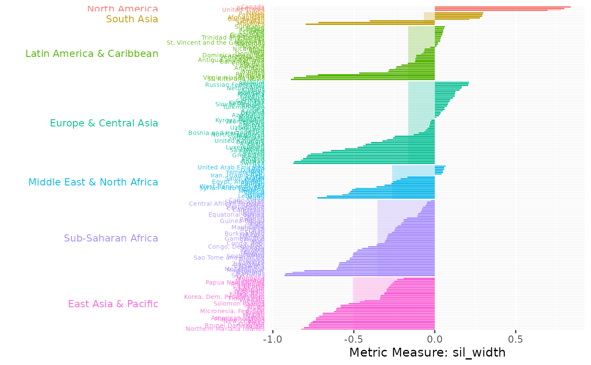

Plot of metric values partitioned by grouping variable
Source:R/plot_metric_partition.R
plot_metric_partition.RdGenerates bars representing the metric value of each country, countries are partitioned by the levels of a specified variable. The metric value of each country is represented by a coloured bar ordered in descending order, while a lighter-shaded rectangular bar beneath indicates the group-level average for the metric. Countries in each group-level are represented by the same colour.
Arguments
- metric_summary
A data frame containing computed diagnostic metrics and the pre-defined grouping information, generated by passing the output of any diagnostic metrics function to
add_group_info- metric_var
Character string specifying metric variable name in
metric_summaryto plot- group_var
A grouping variable in the WDI data set (e.g., "region" or "income")
Value
A ggplot object displaying the metric value of each country by a coloured bar ordered in descending order.
A lighter-shaded rectangular bar is displayed beneath the bars indicating their respective group-level average.
Examples
pm_diagnostic_metrics <- compute_diagnostic_indices(pm_data, group_var = "region")
pm_diagnostic_metrics_group <- add_group_info(metric_summary = pm_diagnostic_metrics,pm_data)
plot_metric_partition(metric_summary = pm_diagnostic_metrics_group,
metric_var = "sil_width", group_var = "region")
